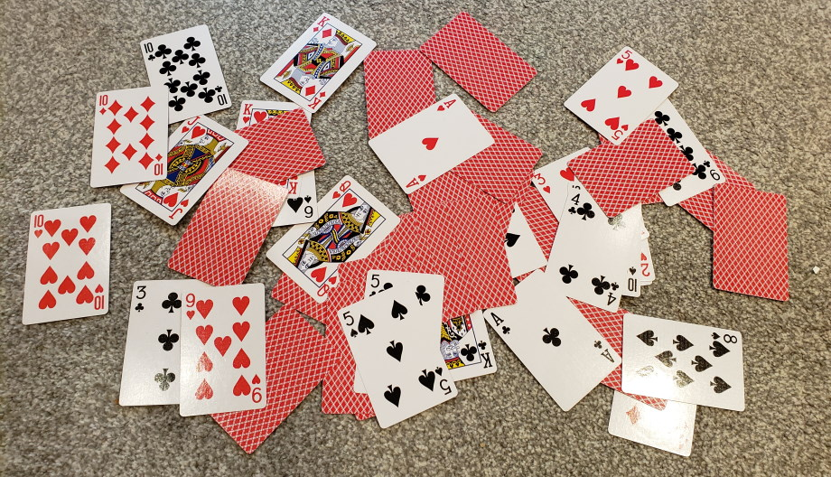
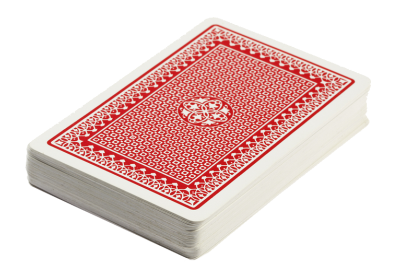

layout: true background-image: url(cardsbkg1.jpg) background-size: cover --- class: center, middle <!-- nastavitev poravnave za trenutni slide --> # 52 card pickup <!-- nov slide --> --- <h1 style="background-color: white; color: black; padding: 10px; border-radius: 5px; display: inline-block;"> Opis problema </h1> Povezava do <a href="https://datagenetics.com/blog/september52021/index.html">problema</a>. .center[Imamo standarden kupček 52 igralnih kart. Kupček damo svoji nečakinji, ki ga vrže v zrak in karte povsem naključno padejo na tla, tako da so ene obrnjene navzgor, ene navzdol... Sedaj vse <b>navzgor</b> obrnjene karte pustimo na tleh, ostale damo nečakinji, da jih še enkrat vrže.] <!-- nov slide --> -- count:false <!-- nov slide z obstoječo vsebino --> Koliko je pričakovano število metov, da bodo vse karte na tleh in obrnjene navzgor? .center[] <!-- nov slide z obstoječo vsebino --> --- layout: false name: analiza-problema .right[] # Analiza problema --- template: analiza-problema Zanima nas <i>pričakovana vrednost</i> števila metov. Za lažjo predstavo, začnimo z eno karto oziroma v trenutku, ko jih 51 že navzgor obrnjenih leži na tleh. --- template: analiza-problema $$ E(1) = \frac{1}{2}1 + \frac{1}{2}(1 + E(1)) $$ Lahko si predstavljamo, kot da imamo $\frac{1}{2}$ možnosti, da se karta obrne navzgor in $\frac{1}{2}$, da karta pade obrnjena navzdol in je treba poskus ponoviti. Zato dodamo v oklepaj še en E(1). Ko to poračunamo, dobimo: $$ E(1) = 2 $$ To pomeni, da je pričakovano število metov z eno karto v roki enako 2. --- template: analiza-problema Sedaj si predstavljajmo, da imamo 2 karti. Zgodi se lahko ena od treh stvari: <ul> <li>Če obe karti pristaneta obrnjeni navzgor ($\frac{1}{2}\cdot\frac{1}{2} = \frac{1}{4}$) naredimo le en met ter zaključimo.</li> <li>Če obe karti pristaneta obrnjeni navzdol ($\frac{1}{2}\cdot\frac{1}{2} = \frac{1}{4}$) naredimo en met in ponovimo met.</li> <li>Če ena karta pristane obrnjena navzgor, ena obrnjena navzdol $(2\cdot(\frac{1}{2}\cdot\frac{1}{2}) = \frac{1}{4})$ naredimo en met in nam ostane ena karta, kar pomeni, da smo spet v E(1).</li> </ul> --- template: analiza-problema ## Formula za 2 $$ E(2) = \frac{1}{4}1 + \frac{1}{2}(1 + E(1)) + \frac{1}{4}(1 + E(2)) $$ Spet poračunamo s tem, da vstavimo E(1) od prej in izrazimo E(2). Dobimo: $$ E(2) = \frac{8}{3} $$ --- layout: false name: ideja .right[<img src="bulb.webp" height="70">] # Ideja --- template: ideja Mogoče bo pomagalo če si napišemo po istem postopku naslednje $E(3), E(4), E(5)$... $$ E(3) = \frac{1}{8}1 + \frac{3}{8}(1 + E(1)) + \frac{3}{8}(1 + E(2)) + \frac{1}{8}(1 + E(3)) $$ $$ E(4) = \frac{1}{16}1 + \frac{4}{16}(1 + E(1)) + \frac{6}{16}(1 + E(2)) $$ $$ + \frac{4}{16}(1 + E(3)) + \frac{1}{16}(1 + E(4)) $$ $$ E(5) = \frac{1}{32}1 + \frac{5}{32}(1 + E(1)) + \frac{10}{32}(1 + E(2)) $$ $$ + \frac{10}{32}(1 + E(3)) + \frac{5}{32}(1 + E(4)) + \frac{1}{32}(1 + E(5)) $$ --- template: ideja Kaj opazimo? V števcih so številke Pascalovega trikotnika! To pomeni, da lahko formulo za splošen $n$ zapišemo z binomskimi simboli. Opomba: uporabimo oznako $E_n$ namesto $E(n)$ za boljšo preglednost. --- layout: true background-image: url(cardsbkg1.jpg) background-size: cover --- <h1 style="background-color: white; color: black; padding: 10px; border-radius: 5px; display: inline-block;"> Formula </h1> $$ E(n) = \frac{1}{2^n}( \binom{n}{0}1 + \binom{n}{1}(1 + E(1)) + \binom{n}{2}(1 + E(2)) + \ldots + \binom{n}{n-1}(1 + E(n-1)) + \binom{n}{n}(1 + E_(n))) $$